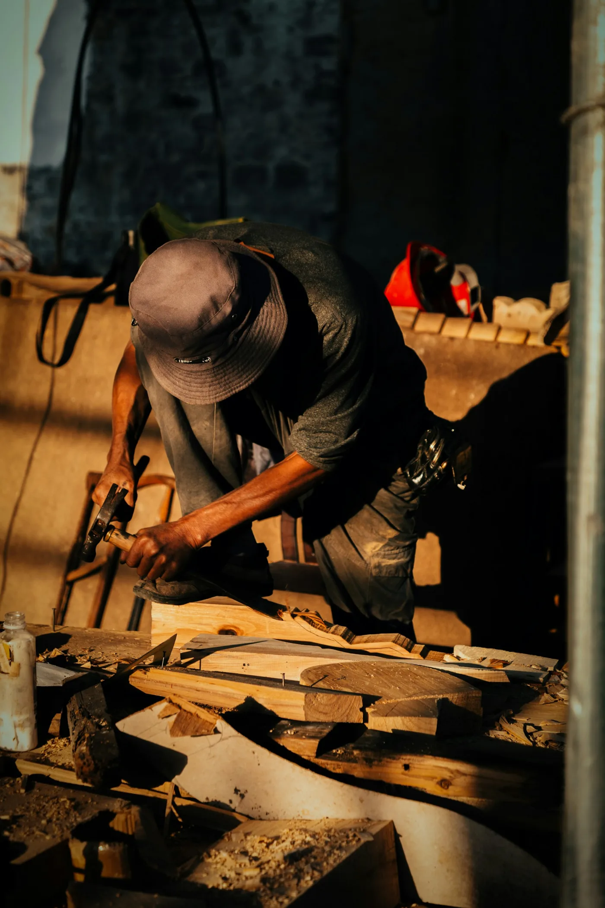
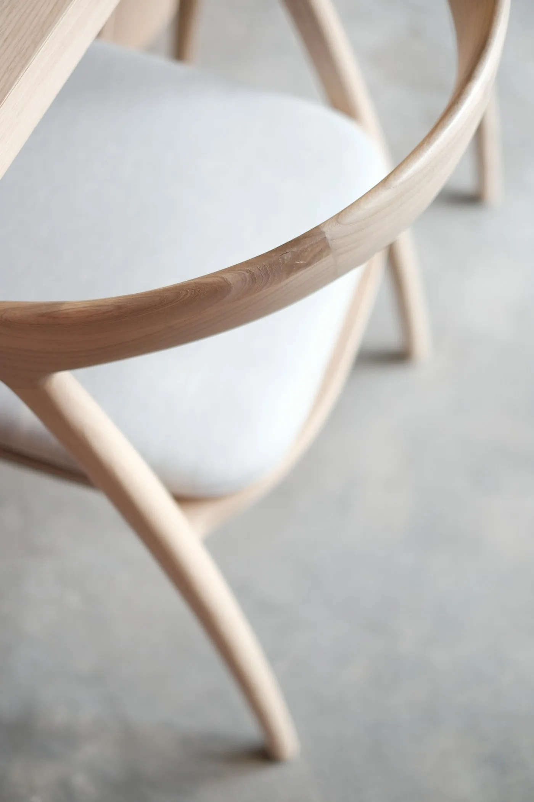
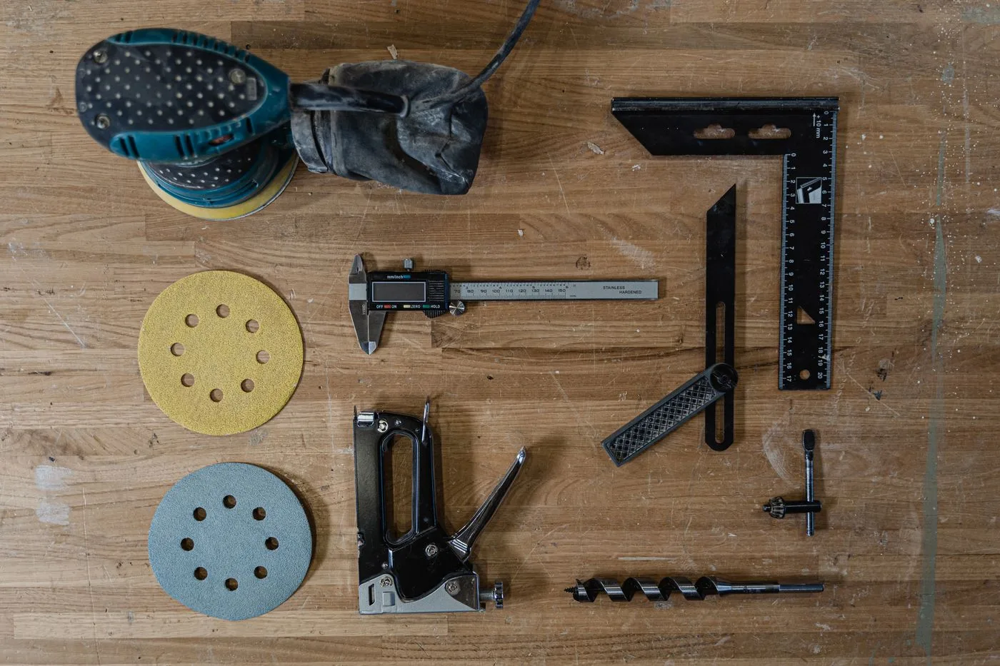

DESIGN & DRAWING
考える人
使う人の希望を聞き、寸法や素材を整理。製作につながる図面を描きます。

MAKE SOMETHINGWHAT WE MAKE
家族が囲むダイニングテーブル。
お気に入りを並べる、小さな棚。
誰かの暮らしに残るものを、つくっています。
最初から、うまくできなくていい。
道具の名前を覚えるところから
自分の手で仕上げるところまで。
ひとつずつ、身につけていく仕事です。

THE FINISH IS IN THE DETAILS.
図面どおりに切るだけでは、家具は完成しない。
触れたときに気になるところがないか。
毎日使う人のことを、想像しながら仕上げる。

THREE WAYS TO MAKE
DESIGN & DRAWING
使う人の希望を聞き、寸法や素材を整理。製作につながる図面を描きます。
MAKE & FINISH
切る、組む、磨く。木の表情を見ながら、一つひとつの工程を丁寧に進めます。
DELIVERY & SETUP
完成した家具を届け、その場所に合わせて設置。使い始めるまでを支えます。
A DAY IN THE WORKSHOP
図面の確認から製作、片付けまで。
工房の一日をご紹介します。
図面を囲んで工程を確認。気になるところは、作業前に相談します。
木目や節も材料の個性。仕上がりを考えながら木取りを進めます。
作業の区切りで仕上がりを確認。困ったときは、隣の人に聞けます。
使った道具と作業場を片付け、翌日の準備をして仕事を終えます。
上記は制作サンプル用の一日の例です。実際の勤務条件ではありません。
OPEN POSITIONS / SAMPLE
家具の製作・組立・仕上げを担当する仕事です。未経験の方は、工具の扱い方から。少しずつ、任せられる作業を増やしていきます。
ご要望を整理し、家具の設計・製作図にまとめる仕事です。製造担当と相談しながら、使いやすさとかたちを考えます。
BEFORE YOU APPLY
ここに掲載した条件は、採用ページを
イメージしていただくための架空の設定です。
募集要項 / 木工製作スタッフ（サンプル）
実際の求人ではありません。このページから応募・雇用契約はできません。
FIRST, COME SAY HELLO.
どんな道具を使うのか。
どんな人と働くのか。
気になることは、見てから考えてください。
デモ用の見学画面です。実際の募集・予約は行っていません。